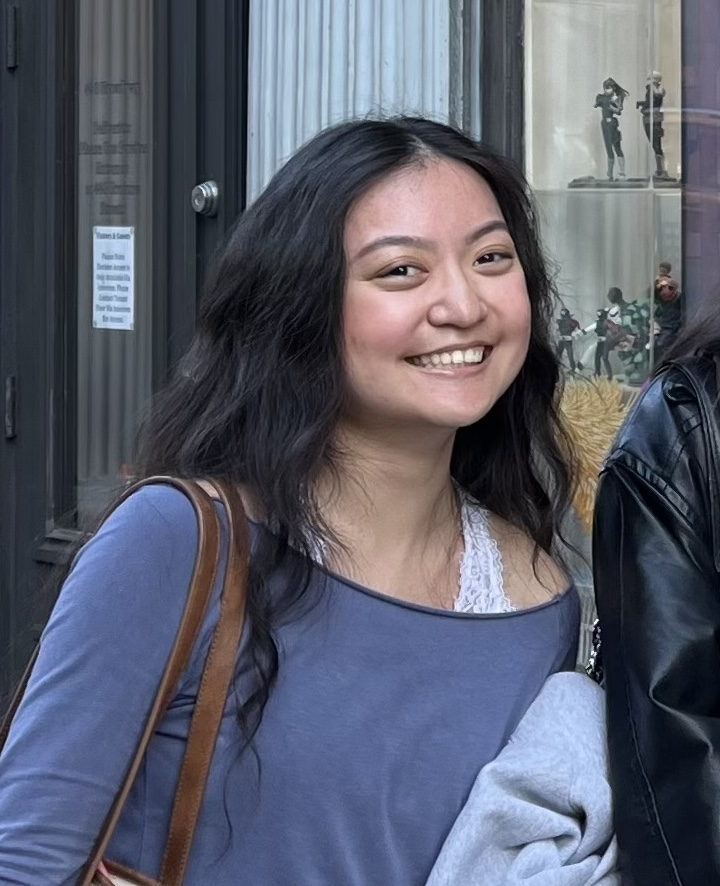

About Me
I'm Gianna, a junior at the University of Massachusetts-Amherst studying English and computer science, and completing the Professional Writing and Technical Communications certificate.
After entering UMass as a primary computer science major and taking a course in human-computer interaction, I decided to center my studies around information design and user experience research. I'm interested in digital design, web development, and social media management and marketing.
My Goals
It is my goal to continue expanding my skills in web design and development with a specific focus on digital accessibility. I believe that good design and accessibility go hand in hand and all my projects, including this very website, were created with that idea at the forefront.
Contact Me
Want to get in touch with me? Send me a message and I'll be sure to respond to it as soon as possible.